Since I was a kid, I started to watch Pokémon. I can't even remember when I started, but it feels like it's been forever.
After watching it for a long time, I started to play the games.
In the following order and consoles:


Then... I stopped playing...
I couldn't play any of the games on Nintendo DS😪😫😔😓And after 8 years, I bought my Nintendo 3DS and tackled the game again, but now, I have discovered the love of competitive Pokémon.
I started to play online tournaments, and I was getting good at it. Then 4 games were released: Pokémon Sun, Moon, Ultra Sun, and Ultra Moon.
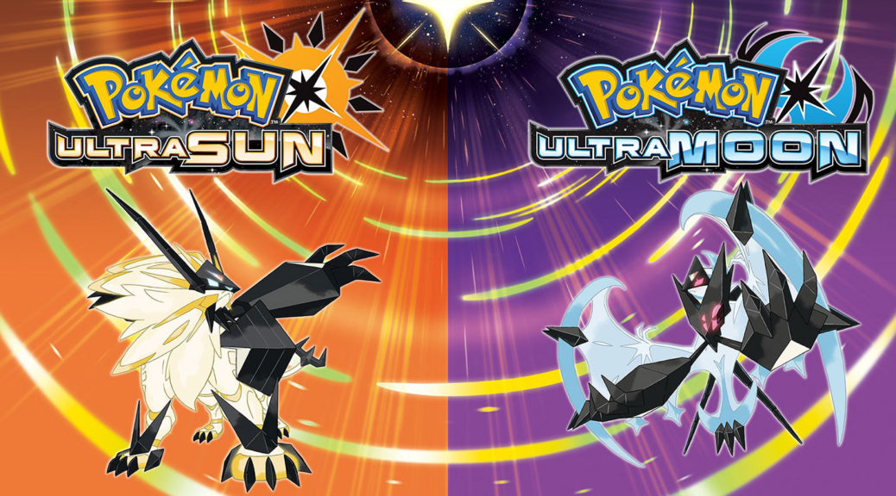These games were the first ones in a long time which had access to the complete Pokédex. Then an additional goal was added to my list: completing the Pokédex. I started to trade, train, breed, and collect all the Pokémon so I could complete the Pokédex. After a lot of hard work, I was able to accomplish it.
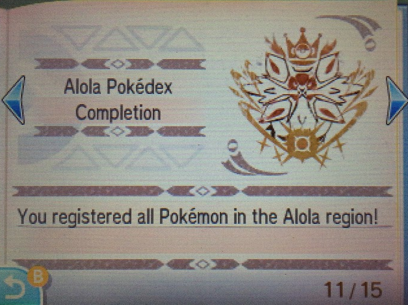And lastly, I have been playing Pokémon Scarlet and Violet, in which I was able to go into actual tournaments. Here are some of the photos of these events:
 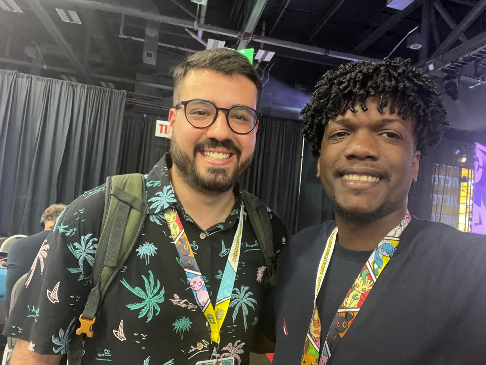
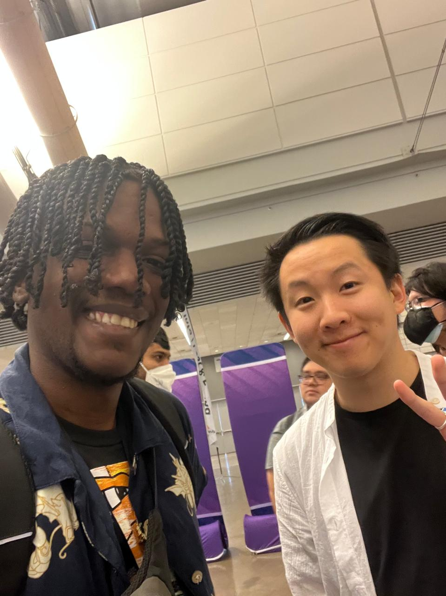
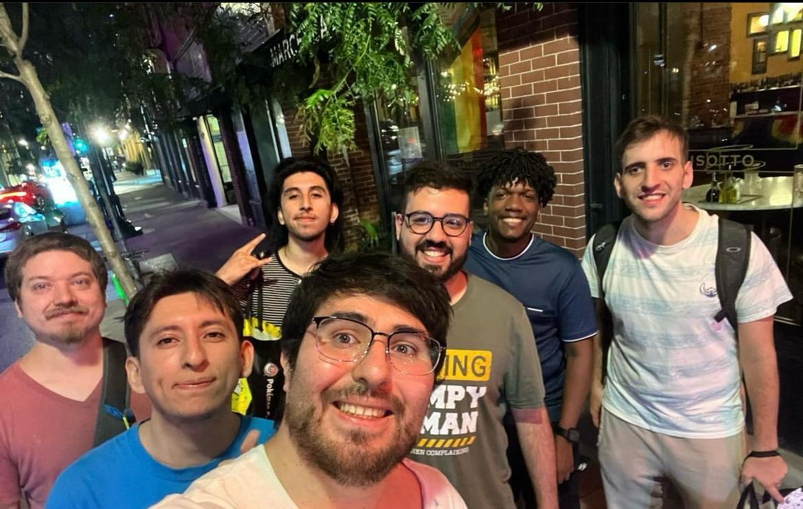
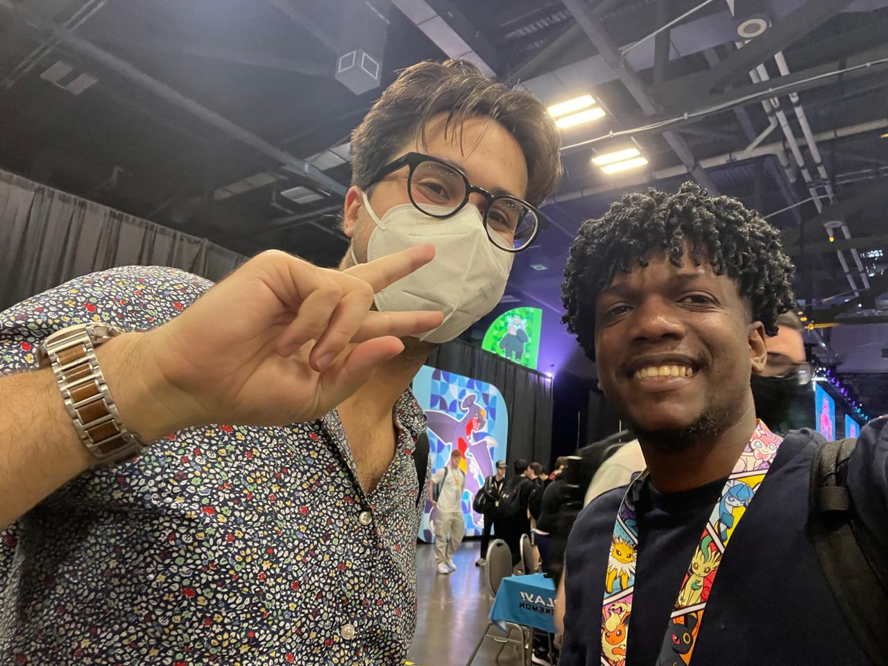
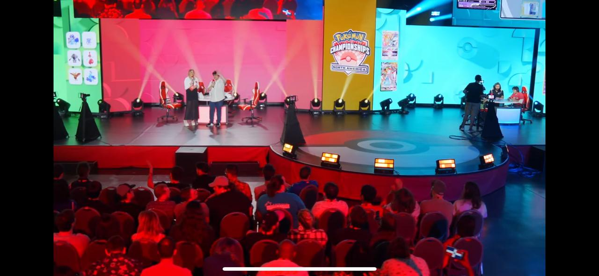
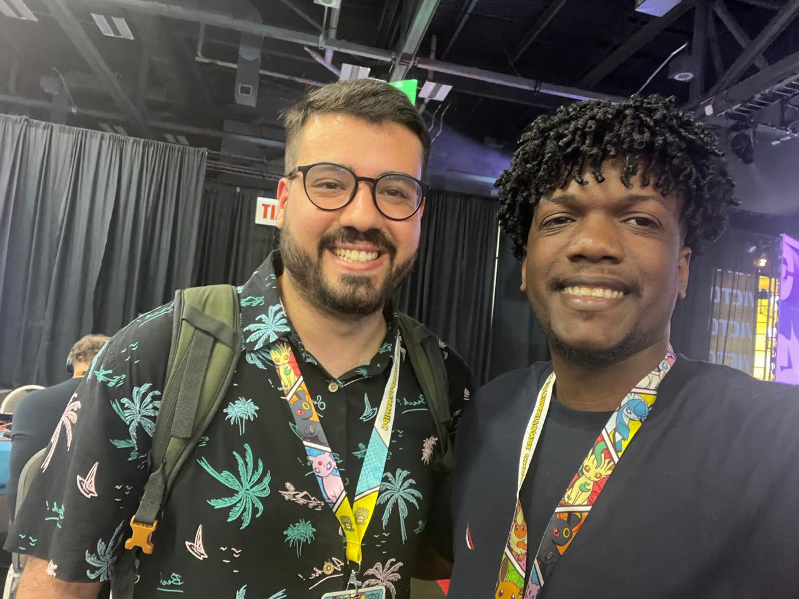
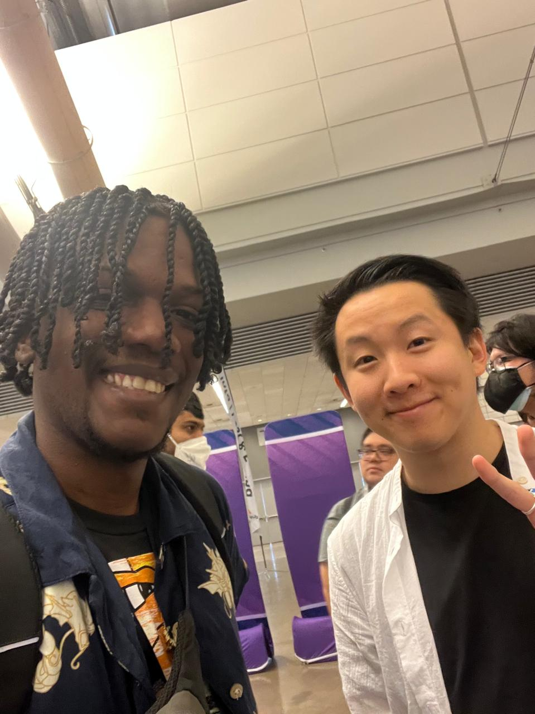
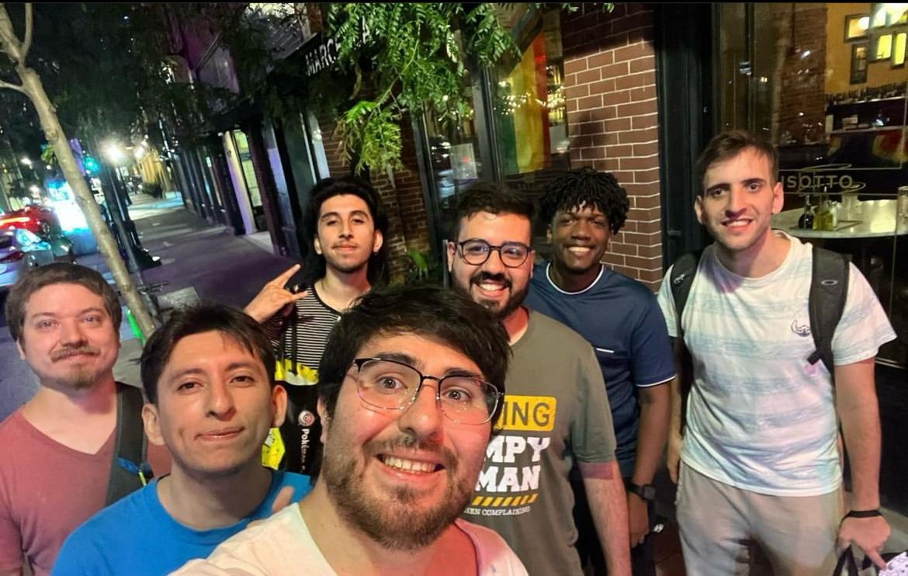
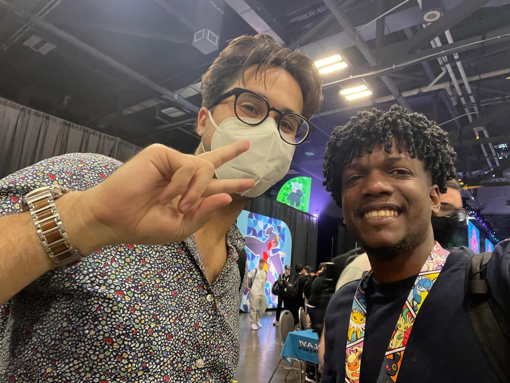
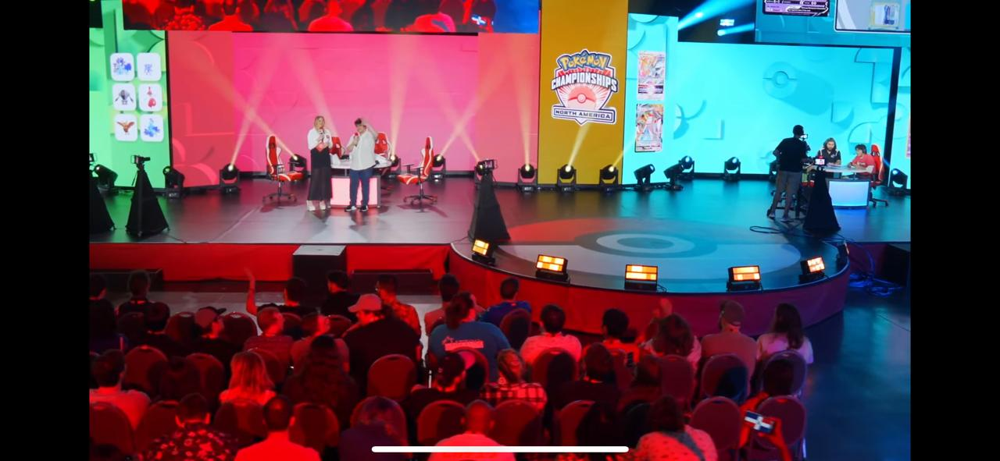